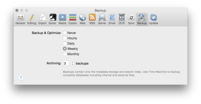

|
|
Backup |
|
 DEVONthink Pro Office comes with a simple backup function that backs up the database index on a regular bases. These options define how often DEVONthink Pro Office will back up indexes. The backup automatically duplicates all important database files and moves the duplicates into a folder(s) named "Backup(.x)" within the DEVONthink Pro Office database folder/package. Select how often you want to have the backup created--never, daily, weekly, or monthly--and how many copies of the index your want DEVONthink Pro Office to keep. Of course, you can create a backup at any time using Tools > Backup & Optimize . These options do NOT backup the whole database to a secure location; they simply make sure there's a copy of the index files in case the index get corrupted. To back up your complete database, use Time Machine or a third-party backup software. DEVONthink Pro Office also comes with a number of handy scripts that export your database as files and folders (independent from DEVONthink Pro Office). Read more... |